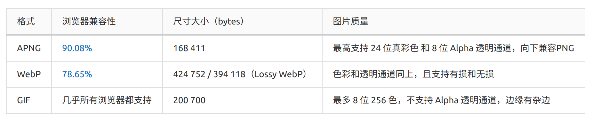
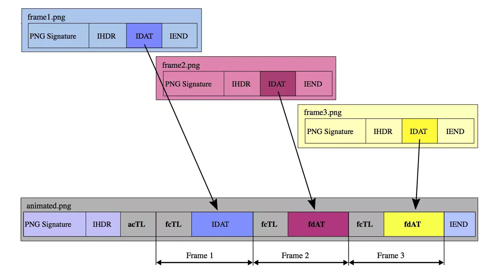

隐写基础_文件结构
隐写基础知识_文件结构

常见文件类型
png
1 | |
构成：文件头 + 三个以上png数据块
数据块：
1.关键数据块（标准数据块）—— 4 个标准数据块，PNG必需的数据块
包括：文件头数据块（IHDR）， 调色板数据块（PLTE）
图像数据块（IDAT），图像结束数据块（IEND）
IHEAD：包括了图片的宽，高，图像深度，颜色类型，压缩方法等
1 | |
IDAT隐写基础
IEND（image trailer chunk图像结束数据）：标记 PNG 文件或者数据流结束，必须放在文件尾部
2.辅助数据块（可选数据块）
包括：tRNS、bKGD、gAMA、sBIT等。
JPG
1 | |
JPEG 是有损压缩格式，将像素信息用 JPEG 保存成文件再读取出来，其中某些像素值会有少许变化。保存时质量参数可在 0 至 100 之间选择，参数越大图片就越保真，但体积也越大。一般情况下选择 70 或 80
APNG
APNG（Animated Portable Network Graphics，Animated PNG）是基于 PNG 格式扩展的一种位图动画格式，增加了对动画图像的支持，同时加入了 24 位真彩色图像和 8 位 Alpha 透明度的支持，动画拥有更好的质量。
相比 gif 可以容纳更多的色彩;且向下兼容 png 格式图片
支持 alpha 透明通道
图片体积相比 gif 更小
 APNG 在 PNG 的基础上增加了 acTL、fcTL 和 fdAT 3 种块 
除 APNG 外，常见的动画格式还有 GIF 和 WebP，区别如下acTL：动画控制块，包含了图片的帧数和循环次数（ 0 表示无限循环）
fcTL：帧控制块，属于 PNG 规范中的辅助块，包含了当前帧的序列号、图像的宽高及水平垂直偏移量，帧播放时长和绘制方式（dispose_op 和 blend_op）等，每一帧只有一个 fcTL 块
fdAT：帧数据块，包含了帧的序列号和图像数据，仅比 IDAT 多了帧的序列号，每一帧可以有一个或多个 fcTL 块。fdAT 的序列号与 fcTL 共享，用于检测 APNG 的序列错误，可选择性的纠正
IDAT 块是 APNG 向下兼容展示时的默认图片。如果 IDAT 之前有 fcTL， 那么 IDAT 的数据则当做第一帧图片（如上图结构），如果 IDAT 之前没有 fcTL，则第一帧图片是第一个 fdAT
GIF
1 | |
- 文件头（File Header）
- GIF 文件署名（Signature）：即‘GIF’三个符号，确认GIF格式
- 版本号（Version）：三个字节组成，87a或89a
- GIF 数据流（GIF Data Stream）
- 控制标识符
- 图象块（Image Block）
- 其他的一些扩展块
- 文件终结器（Trailer）：固定值 0x3b
1 | |
BMP
1 | |
Bitmap（位图）或是DIB（设备无关位图），Windows系统中广泛使用的图像文件格式
- 文件头(bmp file header)：文件格式、大小等信息
- 位图信息头(bitmap information)：提供图像数据的尺寸、位平面数、压缩方式、颜色索引等信息
- 调色板(color palette)：可选，如使用索引来表示图像，调色板就是索引与其对应的颜色的映射表
- 位图数据(bitmap data)：图像数据
ELF
Linux中，ELF文件全称为：Executable and Linkable Format，主要有三种形式，分别是：
- 可执行文件
- 动态库文件（共享文件 .so）
- 目标文件（可重定位文件 .o）
DOCX
DOCX 文 件 头 为 “50 4B 03 04”，与 ZIP 文件头类似， 这是由于 DOCX 文档的结构是按照压缩原理设计的
DOCX 文档的目录结构展开来看和压缩文件一样具有文件系统的文件组织 形式，并以树状结构排列，包含目录和子目录，其 中叶子节点是一些文件流
一般 DOCX 文档包含 [Content_Types].xml 文件、rels 文件夹、docProps类文件和文档内容类文件（一般在 word、custom 等文件夹下）
1.1[Content_Types].xml 文件对整个文档中内容所对应的媒体类型进行说明
应用程序读取 DOCX 文件时，先解析 [Content_ Types].xml，就可以在 [Content_Types].xml 中得到文 档所用到的格式、内容、图片等所对应的媒体类型 以及保存的位置，为下一步调用指出入口
对于大部分 DOCX 文档来说，[Content_ Types].xml 的内容都是类似的，也就是说文档格式 的媒体类型一样，生成的文件夹和子文件夹以及文件名称相同，只是在项目数量上有区别
1.2rels 是 relationships 的缩写， 用来定义文档格式 与媒体类型之间的对应关系
根据 rels 可以快速得到各部件和媒体类型格式包的 对应关系，不需要考虑具体的格式，可以节省读取时间
根 _rels 文件夹和 word、custom 等文件夹下都存 储有 rels 类文件，根文件夹下的 rels 文件解释文档中主部件和顶级包的关系
word 文件夹下的 rels 文件 document.xml.rels 列 出 document.xml 所需的其他部件，如果文档中有用户自定义的一些属性，则会在 custom 文件夹下分别 创建以 item 命名的 rels 文件，进一步解释当前文件 夹下子部件和包的对应关系
1.3docProps 文件夹中包括core.xml、app.xml、custom.xml 等
1.4文档解析内容
word、custom 等文件夹保存了用户对文档的各种操作。custom 中 以 item 为首命名的 xml 文件解释文档中的自定义数据部件，这个部件对 文档的整 体内容影响不大，即使缺失也可以正常读取文档内容。word 文件夹中包含了大量 xml 文件，用来解 释文档的页眉、页脚、批注、脚注、尾注、web 设 置、自定义设置、格式、内容等
2.1基于关联对象的信息隐藏
[Content_Types].xml 作 为 DOCX 文 档 的 入 口，文档中每添加一类对象， 就需要在 [Content_Types]. xml 进行声明